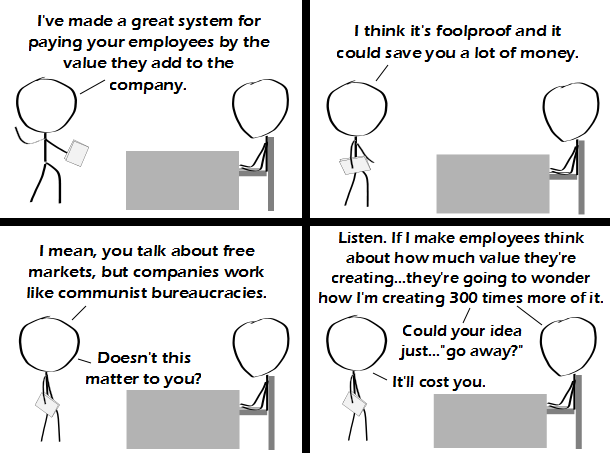

Comic JK 809
When I Feel Like It
⇤
<
?
>
⇥

⇤
<
?
>
⇥
Forum
.
RSS
.
Digg
.
Facebook
.
Reddit
.
Twitter
.
Stumbleupon
Enter your thoughts on number 809 here. Please, no spamming, trolling, or paying people a fair amount based on how much value they add to a company. Is "fullproof" like "foolproof" only more absolute? [It's been fixed] >Proof against full value? >>So easy even someone who's full of baloney could do it. >PFFFTTTCHH >For all intensive purposes, we know what he meant. Update: As soon as I updated my comment, fullproof->foolproof. >*Intents and... (unless you were being ironic) >>For all in tents and precipices, or for all intense porpoises. >>We could care less >>>Irregardless of that.... >>>>this comment has been deleted >>>>>this comment has not been deleted. >>>>Thank you to those of you who played along with the irony. To those of you who didn't get it... come on! >>>>"Irregardless"? WTF? >>>>>That'sa ir-elephant. It is my opinion that CEOs shouldn't be allowed to have a salary greater than eight times the lowest paid worker. Hopefully that would mean that normal wages would increase almost as much as inflation. >Your opinion is stupid and wrong. >>Well said. >>+1 >>> Lowest paid worker where? Salaried or hourly? Your opinion makes no sense. This one is over my head. >This one is under my head.